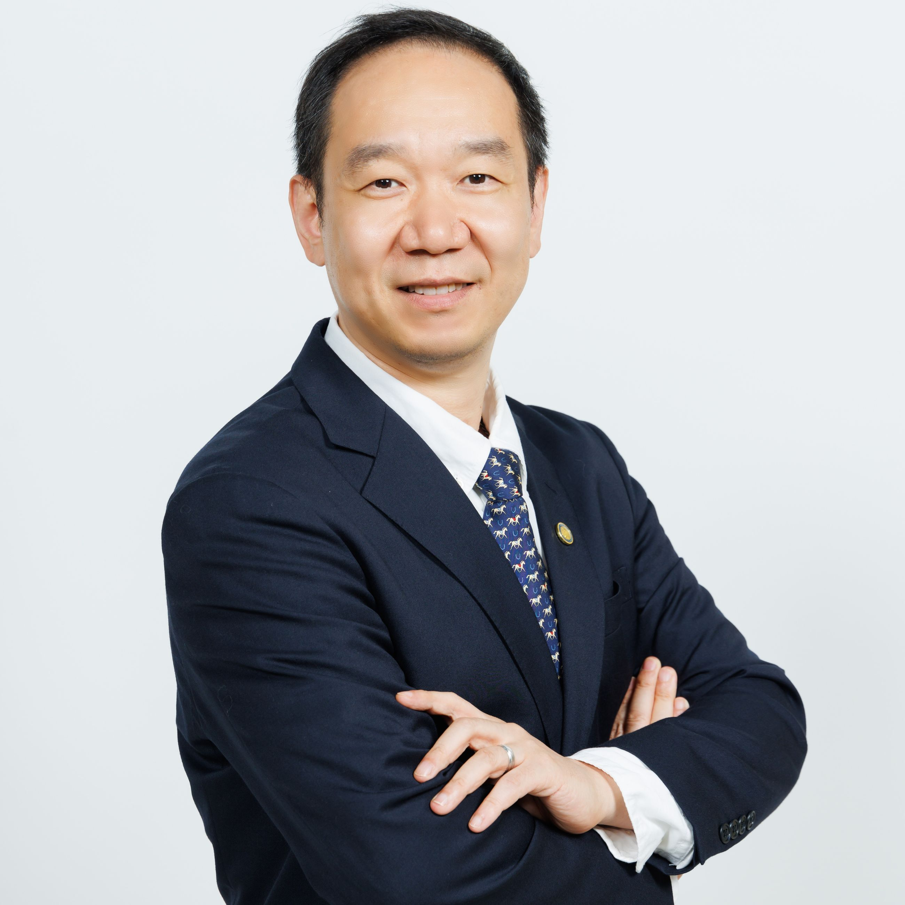

Song Guo
Independent Wikipedia-style draft preview
 Song Guo | |
| Native name | 郭嵩 |
|---|---|
| Fields | Edge computing, distributed computing, machine learning, cloud computing |
| Institutions | Hong Kong University of Science and Technology; Hong Kong Polytechnic University; University of Aizu; University of Northern British Columbia |
| Alma mater | Huazhong University of Science and Technology; Beijing University of Posts and Telecommunications; University of Ottawa |
| Awards | Elected Fellow of the Royal Society of Canada (2026); CCF Award for Overseas Outstanding Contributions (2026); Clarivate Highly Cited Researcher (2020–2025); IEEE Edward J. McCluskey Technical Achievement Award (2024); Member of Academia Europaea (2022); Fellow of the Canadian Academy of Engineering (2021); IEEE Fellow (2020); Changjiang Chair Professor (2019) |
Song Guo (Chinese: 郭嵩) is a computer scientist whose research concerns edge computing, distributed systems, machine-learning systems, and physical artificial intelligence. He is a chair professor and associate head for research and knowledge transfer in the Department of Computer Science and Engineering at the Hong Kong University of Science and Technology (HKUST).[1] In 2024, he received the IEEE Edward J. McCluskey Technical Achievement Award for “pioneering contributions to edge computing and edge intelligence technologies”.[2] In 2026, he was elected to the Academy of Science of the Royal Society of Canada and received the CCF Award for Overseas Outstanding Contributions.[3][4][5]
Biography
Guo received a bachelor's degree from the Huazhong University of Science and Technology, a master's degree from the Beijing University of Posts and Telecommunications, and a PhD in computer science from the University of Ottawa.[1][6]
After a postdoctoral fellowship at the University of British Columbia in 2006, he was an assistant professor at the University of Northern British Columbia from 2006 to 2007. He worked at the University of Aizu from 2007 to 2016 and was a professor at the Hong Kong Polytechnic University from 2016 to 2023. He joined HKUST in 2023.[7] He holds a Changjiang Chair Professorship (長江學者講座教授) awarded by China's Ministry of Education.[8] HKUST also lists him as director of its Center of Physical AI and Physical Edge Intelligence Lab and as program director of its MSc in Artificial Intelligence.[6]
Research
Guo's research spans distributed and cloud computing, mobile computing, edge computing, and machine-learning systems.[1][6] His work on edge intelligence has examined moving machine-learning training and inference from centralized cloud infrastructure towards edge servers and end devices. The IEEE Computer Society has described his contributions as including the development of edge learning, a paradigm for training and inference at the network edge.[9]
His later research has included large language models, world models, embodied AI, and physical AI. At HKUST, he directs the Pervasive Intelligence Laboratory, which studies architectures, algorithms, and systems for robotic agents, world models, embodied AI, and foundation models.[10] His work on edge-native foundation-model services investigates distributed and heterogeneous edge resources for lower-latency and privacy-preserving access to foundation models.[11]
Recognition and professional service
Guo was named a Clarivate Highly Cited Researcher in computer science for six consecutive years from 2020 through 2025.[12][8][13] HKUST reports that he has received more than a dozen best-paper awards from IEEE and ACM venues.[1]
In 2019, the IEEE Computer Society appointed him the inaugural editor-in-chief of the IEEE Open Journal of the Computer Society, beginning with the journal's launch in 2020.[14] He later became editor-in-chief of IEEE Transactions on Cloud Computing.[15] He has also served on the IEEE Communications Society Board of Governors, chaired its Space and Satellite Communications Technical Committee, and served on IEEE Fellow evaluation committees.[1]
Honors and awards
- Elected Fellow of the Royal Society of Canada, Academy of Science (2026)[3][4]
- CCF Award for Overseas Outstanding Contributions (CCF海外科技人物獎) (2026)[5][16]
- Clarivate Highly Cited Researcher (2020–2025)[12][8][13]
- IEEE Edward J. McCluskey Technical Achievement Award (2024)[2]
- Member of Academia Europaea (2022)[7]
- Fellow of the Canadian Academy of Engineering (2021)[17]
- IEEE Fellow, for contributions to high-performance and resilient edge computing (2020)[18]
- Changjiang Scholar Chair Professorship (長江學者講座教授), Ministry of Education of China (2019)[8]
References
- “Song Guo 郭嵩”. Department of Computer Science and Engineering, Hong Kong University of Science and Technology. Retrieved 2 October 2026.
- “Edward J. McCluskey Technical Achievement Award”. IEEE Computer Society. Retrieved 2 October 2026.
- “The 2026 Class of Fellows and College Members”. Royal Society of Canada. 9 September 2026. Retrieved 2 October 2026.
- “Royal Society of Canada: 2026 New Members” (PDF). Royal Society of Canada. 2026. p. 32. Retrieved 2 October 2026.
- “2026年度「CCF海外科技人物獎」評選結果公告” (in Traditional Chinese). I-CFP. Retrieved 2 October 2026.
- “Song Guo”. HKUST Research Portal. Hong Kong University of Science and Technology. Retrieved 2 October 2026.
- “Guo Song”. Academia Europaea. Retrieved 2 October 2026.
- “Song Guo”. Department of Computer Science and Engineering, Hong Kong University of Science and Technology. Retrieved 2 October 2026.
- “On the Edge of Innovation: A Conversation with Song Guo Technical Achievement Award Recipient”. IEEE Computer Society. 25 March 2024. Retrieved 2 October 2026.
- “Pervasive Intelligence Lab”. Hong Kong University of Science and Technology. Retrieved 2 October 2026.
- “Towards Edge-Native Foundation Model-as-a-Service: A New AI Paradigm from Algorithms to Systems”. Department of Computer Science and Engineering, Hong Kong University of Science and Technology. 2024. Retrieved 2 October 2026.
- “COMP scholars named Highly Cited Researchers 2020”. Department of Computing, Hong Kong Polytechnic University. 15 December 2020. Retrieved 2 October 2026.
- “News and Events Archives”. 6G@HK, Hong Kong University of Science and Technology. 15 November 2025. Retrieved 2 October 2026.
- “Song Guo Appointed Editor in Chief for the New IEEE Open Journal of the Computer Society”. IEEE Computer Society. 19 November 2019. Retrieved 2 October 2026.
- “Publications Board”. IEEE Computer Society. Retrieved 2 October 2026.
- “CCF Awards”. China Computer Federation. Retrieved 2 October 2026.
- “Fifty-two new Fellows elected into the Canadian Academy of Engineering” (PDF). Canadian Academy of Engineering. 14 June 2021. Retrieved 2 October 2026.
- “IEEE Computer Society Announces 2020 Fellows”. IEEE Computer Society. 9 December 2019. Retrieved 2 October 2026.